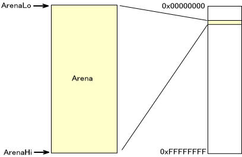
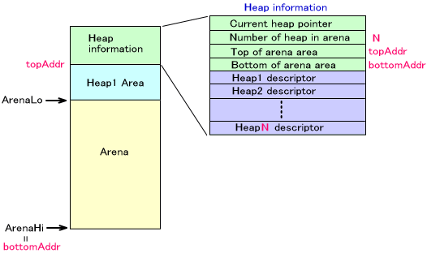
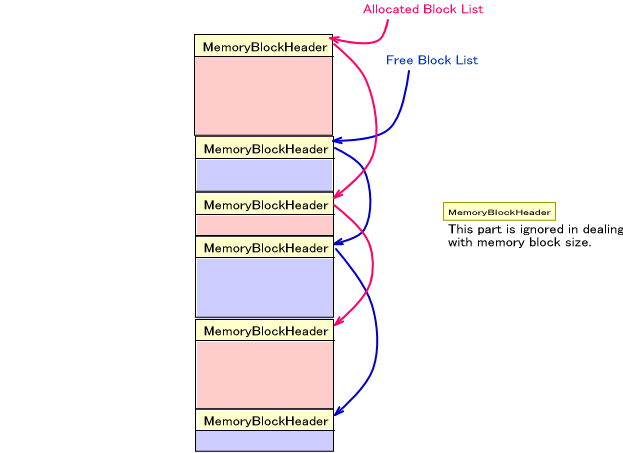

(In the image of the memory map shown on this page, the "lower address" is at the top of the image and the "upper address" is at the bottom.)
Initialization
The NitroSDK allows you to build a heap system in the Arena in which you can allocate and release memory blocks for use in the game. When the OS_InitArena() function initializes the Arena, the ArenaLo pointer is inserted at the front end of the region and the ArenaHi pointer is inserted at the tail end of the region.

A memory allocation system can be built for each of multiple Arenas. In addition, multiple heap regions can be configured for a single Arena.
For an Arena in the state shown in the preceding figure, calling the OS_InitAlloc() function to initialize the memory allocation system results in the creation of a heap information block at the bottom of the memory region, as shown in the figure below. Up to this point, this memory block was an unallocated Arena region. Using the OS_InitiAlloc() return value, the arena's boundary address, ArenaLo, only needs to move by the size of the information block.
The maximum number of heaps that can be created in a single Arena must be specified as an argument of the OS_InitAlloc() function because heap descriptors equal to this maximum number are created in the heap information block as part of the initialization process. The reason for this necessity is that this maximum number of heap descriptors is created in advance in the block information of the heap. As shown in the figure, the heap descriptors store information about the size of the heap regions, the start of free blocks, and the starting addresses of blocks in use.
To clear memory allocation system information, call OS_ClearAlloc().
Heap Creation
Call OS_CreateHeap() to create a new heap. Specify the region to use for the heap using the start and end arguments. The specified region must be within the range from topAddr to bottomAddr in the diagram.
The heap information is stored in the heap descriptor.

Releasing and Reinitializing Heaps
Call OS_DestroyHeap() to destroy created heaps. This does not change the pointers ArenaLo and ArenaHi.
Call OS_ClearHeap() to reinitialize a heap.
Current Heap
You can set current heap for each arena. By setting the current heap, it is no longer necessary to specify heap handlers using several macro functions. It also becomes possible to specify heap with OS_CURRENT_HEAP_HANDLE, even though it is a tool for specifying heap handles.
OS_SetCurrentHeap() sets the current heap.
Extending Heaps
After creating a heap, it is possible to extend the heap region. Call OS_AddToHeap() using the heap argument to specify the heap you want extended.
Do not use the extended heap region for another purpose until you release the heap.
When using OS_AddToHeap(), heap "enclaves" may occur as illustrated below.
Allocating Memory Block
The OS_AllocFromHeap() function allows you to allocate memory blocks from the specified heap. For this function, you must also specify the arena.
For the sake of simplicity, a macro is provided that includes the arena name in the function name. For details, refer to OS_AllocFromHeap().
Also, the OS_AllocFixed() function allows you to allocate memory blocks from a specified region. A memory block allocated with this function is excluded from heap control. Therefore, it is alright to take a memory block allocated with this function as an argument and extend another heap with OS_AddToHeap().
Releasing Memory Block
The OS_FreeToHeap() function allows you to release allocated memory blocks. For this function, you must also specify the arena.
For the sake of simplicity, a macro is provided that includes the arena name in the function name. For details regarding this macro, see the reference materials for OS_FreeToHeap().
Also, the OS_FreeAllToHeap() function allows you to release all memory blocks. Here too a macro is provided that includes arena name in function name. For details regarding this macro, see OS_FreeAllToHeap().
Memory Block Management
Within heaps both free memory and used memory are controlled in block units. These block units are linked with a bidirectional list. After creating a heap, all regions for heap are considered free blocks.
The size of the data area includes the region allocated for heap. With normal use, this value does not change. However, calling OS_AllocFixed() reduces the size of that block amount in heaps that include the specified region. Also, the size of that block amount increases when you add memory blocks that were not originally included in this heap by calling OS_AddToHeap().
The following diagram shows the heap and heap descriptor state at a point in time. In this example, when FreeBlockList reaches addr1 and then follows the next link, it becomes clear that addr1 and the block that starts from addr5 and addr3 are empty regions. In the same way, by following Allocated Block List, it becomes clear that the block that starts from addr2, addr4, and addr6 is in use.
Memory Block Size Information
The following functions are available:
OS_GetTotalAllocSize() gets the total size of the memory block (not including the header size) being used
OS_GetTotalOccupiedSize() gets the total size of the memory block (including the header size) being used
OS_GetTotalFreeSize() gets the total size of the free memory block
OS_GetMaxFreeSize() gets the size of the largest free memory block
OS_ReferentSize() specifies a memory block and then gets the size of that block
These functions only take into account parts where memory block data is stored. In other words, the size of the part that controls memory is not included. Even though these are functions that get the totals, that total is only the data region part.

Debugging Functions
OS_DumpHeap() displays heap contents using OS_Printf(). This function is used for debugging.
Also, OS_CheckHeap() checks the validity of the heap contents.
OS function list (Arena), OS function list (Alloc)
2005/10/07 Added OS_GetTotalOccupiedSize()
03/14/2005 Corrected link destination error
03/03/2005 Corrected link destination error
12/13/2004 Corrected Wording
10/26/2004 Initial version
CONFIDENTIAL